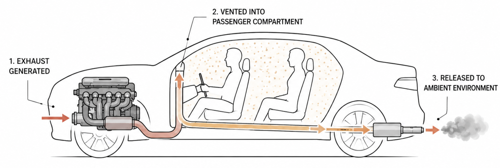

Explanatory memorandum
The Union's automotive sector contributes 7 % of total Union GDP and supports approximately 13 million direct and indirect jobs. The tightening of vehicular emission limits has imposed cumulative compliance costs on the industry (estimated at € 1 100 per vehicle), thus eroding the financial viability of privately operated manufacturers. Manufacturers report increasing difficulty in reconciling combustion-engine viability with the trajectory of air-quality and emission standards. This is regrettable.
Rather than continue to impose further reductions at the source, this Regulation revokes any previous emission standards, permitting emissions of any vehicle at any level, without limitation, irrespective of entry into a high-density population area. Existing restricted-traffic zones for combustion-driven vehicles shall accordingly be abolished.
The Regulation imposes a single binding requirement: the post-combustion exhaust stream shall be vented into the passenger compartment of the emitting vehicle, before being released to the ambient environment. The occupants of the vehicle (hereinafter referred to as the biofiltration cohort) provide, through ordinary respiratory function, a final-stage absorption service equivalent in mass-balance terms to that previously demanded of the catalytic converter.
This approach yields three strategic benefits.
- Removal of a substantial regulatory burden from a strategic industrial sector.
- Reallocation of the resulting public-health externality to a self-selecting cohort, those choosing to operate or ride in motor vehicles, thereby aligning exposure with personal lifestyle preference.
- Utilisation of the previously unused – and not just relying on the non-consenting third parties – absorptive capacity of the human respiratory tract (carbon capture, microparticle filtration).
Recitals
(1) The competitiveness of the Union automotive sector is essential to the open strategic autonomy of the Union.
(2) The right of every citizen to use private means of motorised transport is a freedom enshrined in the cultural and economic life of the Union.
(3) The exercise of the freedom described in Recital (2) shall, by virtue of this Regulation, also constitute the exercise of personal responsibility for the consequent biofiltration.
(4) The respiratory tract of an adult human exchanges some 11 000 litres of air per day. This previously underutilised volumetric capacity, taken in aggregate over the Union vehicle fleet, represents an opportunity for the in-place recapture of vehicular emissions without further Union expenditure.
(5) The natural persons performing the function described in Recital (3) shall be recognised as members of a biofiltration cohort whose service to the wider community is acknowledged but, similar to the non-polluting third parties, shall remain uncompensated.
In simple English
Cars may pollute without any limits and traffic restrictions are lifted.
Any exhaust fumes of the vehicle are first circulated through the passenger compartment of the vehicle, before releasing them to the outside air.

You may have noticed the satire by now. Unfortunately, the underlying science is not. Even if you do not care about CO2 accumulation, traffic-related air pollution causes hundreds of thousands of premature deaths every year (and that is just Europe).
Scientific basis
Long-term exposure to traffic-related air pollution (TRAP) is causally associated with elevated all-cause mortality, ischaemic heart disease, stroke, lung cancer, chronic obstructive pulmonary disease, type 2 diabetes, low birth weight, and incident childhood asthma. The International Agency for Research on Cancer classifies outdoor air pollution — and the particulate-matter component thereof — as carcinogenic to humans (Group 1). The principal pollutants implicated are fine particulate matter (PM2.5), ultrafine particles, black carbon, nitrogen dioxide (NO₂), and ozone (O₃).
The burden falls heaviest on residents of densely populated cities, where road traffic is the dominant source of PM2.5 and NO₂. The European Environment Agency attributes 238 000 premature deaths in the EU-27 in 2020 to long-term PM2.5 exposure, a further 49 000 to NO₂, and 24 000 to ozone. A health-impact assessment of 858 European cities (Khomenko et al., 2021) found that the great majority of urban residents are exposed to levels exceeding the WHO 2021 air-quality guideline values, and estimated that compliance with those guidelines would prevent tens of thousands of premature deaths every year across the assessed cities. Madrid, Antwerp, Turin, Paris, and Brescia are among the cities with the highest avoidable mortality from PM2.5; Antwerp, Brussels, Madrid, Mollet del Vallès, Turin, and Paris top the corresponding rankings for NO₂.
Cardiovascular effects are the dominant pathway. Lelieveld et al. (2019) estimated that ambient air pollution causes approximately 790 000 excess deaths per year in Europe, the majority attributable to cardiovascular disease. The biological mechanisms — sympathetic activation, systemic oxidative stress, endothelial dysfunction, and accelerated atherosclerosis — are by now broadly characterised.
Children are disproportionately affected. A meta-analysis of 41 studies (Khreis et al., 2017) found that exposure to TRAP is a substantial cause of new childhood asthma, with the attributable fraction considerably higher in dense urban environments near major roads. Pooled studies of commuter and roadside exposure (Knibbs et al., 2011) further show that vehicle occupants, cyclists, and pedestrians close to traffic frequently encounter ultrafine-particle, black-carbon, and NO₂ concentrations that exceed nearby ambient levels, particularly in stop-start traffic, tunnels, and at junctions.
These findings are not contested in the peer-reviewed literature. Reducing traffic volumes, restricting combustion-vehicle activity in city centres, and shifting urban transport away from private internal-combustion vehicles are among the measures consistently identified as effective in lowering this burden of disease.
References
- International Agency for Research on Cancer. IARC Monographs Volume 109: Outdoor Air Pollution (2016).
- World Health Organization. WHO global air quality guidelines: particulate matter (PM2.5 and PM10), ozone, nitrogen dioxide, sulfur dioxide and carbon monoxide (2021).
- European Environment Agency. Air quality in Europe 2023. EEA Report.
- Khomenko S., Cirach M., Pereira-Barboza E. et al. Premature mortality due to air pollution in European cities: a health impact assessment. The Lancet Planetary Health 5(3), e121–e134 (2021).
- Lelieveld J., Klingmüller K., Pozzer A. et al. Cardiovascular disease burden from ambient air pollution in Europe reassessed using novel hazard ratio functions. European Heart Journal 40(20), 1590–1596 (2019).
- Health Effects Institute. Systematic Review and Meta-analysis of Selected Health Effects of Long-Term Exposure to Traffic-Related Air Pollution. HEI Special Report 23 (2022).
- Khreis H., Kelly C., Tate J. et al. Exposure to traffic-related air pollution and risk of development of childhood asthma: A systematic review and meta-analysis. Environment International 100, 1–31 (2017).
- Beelen R., Raaschou-Nielsen O., Stafoggia M. et al. Effects of long-term exposure to air pollution on natural-cause mortality: an analysis of 22 European cohorts within the multicentre ESCAPE project. The Lancet 383(9919), 785–795 (2014).
- Knibbs L. D., Cole-Hunter T., Morawska L. A review of commuter exposure to ultrafine particles and its health effects. Atmospheric Environment 45(16), 2611–2622 (2011).
- Brunekreef B., Holgate S. T. Air pollution and health. The Lancet 360(9341), 1233–1242 (2002).